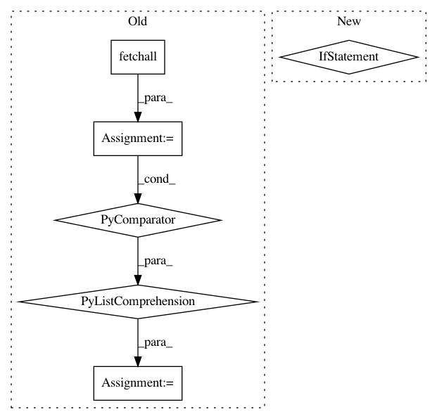

0459261c388bec72937e0268c4316b85279d0bac,allennlp/semparse/contexts/sql_table_context.py,SqlTableContext,initialize_grammar_str,#SqlTableContext#,164
Before Change
for column in columns])
for column in columns:
self.cursor.execute(f"SELECT DISTINCT {table} . {column} FROM {table}")
grammar_str += generate_one_of_string(nonterminal=f"{table}_{column}_string",
literals=[row[0] for row in self.cursor.fetchall()],
is_string=True)
grammar_str += "biexpr = ( col_ref ws binaryop ws value) / (value ws binaryop ws value) / " + \
f"{" / ".join(sorted(biexprs, reverse=True))}\n"
return grammar_str
After Change
for column in columns])
for column in columns:
self.cursor.execute(f"SELECT DISTINCT {table} . {column} FROM {table}")
if column.endswith("number"):
self.grammar_dictionary[f"{table}_{column}_string"] = \
sorted([f""{str(row[0])}"" for row in self.cursor.fetchall()], reverse=True)
else:
self.grammar_dictionary[f"{table}_{column}_string"] = \
sorted([f""\"{str(row[0])}\""" for row in self.cursor.fetchall()], reverse=True)
self.grammar_dictionary["biexpr"] = sorted(biexprs, reverse=True) + \
["( col_ref ws binaryop ws value)", "(value ws binaryop ws value)"]
return "\n".join([f"{nonterminal} = {" / ".join(right_hand_side)}"
for nonterminal, right_hand_side in self.grammar_dictionary.items()])
In pattern: SUPERPATTERN
Frequency: 3
Non-data size: 6
Instances
Project Name: allenai/allennlp
Commit Name: 0459261c388bec72937e0268c4316b85279d0bac
Time: 2018-09-24
Author: kl2806@columbia.edu
File Name: allennlp/semparse/contexts/sql_table_context.py
Class Name: SqlTableContext
Method Name: initialize_grammar_str
Project Name: biolab/orange3
Commit Name: f66d5ef4c6fd35b1a7d099e0c93cbdfdbdbc7902
Time: 2014-06-18
Author: lan.zagar@fri.uni-lj.si
File Name: Orange/feature/discretization.py
Class Name: EqualWidth
Method Name: __call__
Project Name: biolab/orange3
Commit Name: f66d5ef4c6fd35b1a7d099e0c93cbdfdbdbc7902
Time: 2014-06-18
Author: lan.zagar@fri.uni-lj.si
File Name: Orange/feature/discretization.py
Class Name: EqualFreq
Method Name: __call__